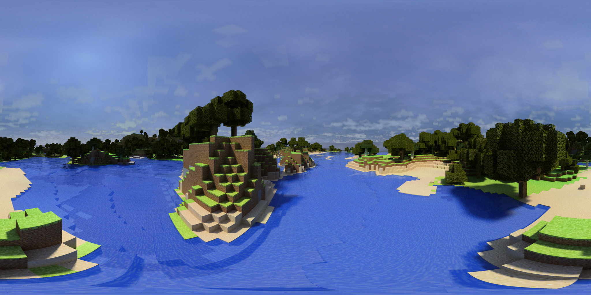

<body>
	<!DOCTYPE html>
	<html>
	<script src="https://aframe.io/releases/1.2.0/aframe.min.js"></script>
	
	<script src="https://cdn.rawgit.com/donmccurdy/aframe-extras/v4.2.0/dist/aframe-extras.min.js"></script>
	<script src="https://rawgit.com/rdub80/aframe-gui/master/dist/aframe-gui.min.js"></script>
	
	<body>
	 
	  <a-scene>
		 <a-assets>
		   
	
			
			
			
			
			
		
			 
			
			<a-asset-item id="face" src="3d/logo-face/scene.gltf"></a-asset-item>
			<a-asset-item id="book" src="3d/medieval-book/scene.gltf"></a-asset-item>
			<a-asset-item id="mark" src="3d/mark/scene.gltf"></a-asset-item>
	
		  </a-assets>
	  
	
	
		<a-camera>
		  <a-cursor></a-cursor>
		</a-camera>
	  </a-scene>
	</body>
	</html>
	
	